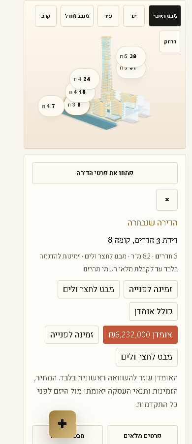

Rainbow showroom live model selection QA - 1.69.7
Status: Passed after live WordPress plugin update.
Checked against https://nad-lan.co.il/projects/rainbow-tel-aviv/. The live healthcheck reports nadlan-config 1.69.7.
What was fixed
The old mobile problem was real: empty toolbar wrapper space covered the upper model area, so some taps hit .nlp3d-toolbar instead of model-viewer. Release 1.69.7 lets empty toolbar space pass taps through while keeping the real toolbar buttons clickable.
Mobile visual proof



Machine checks
Marker-center taps passed for all six visible units on desktop and 390px mobile. The free mobile model-surface grid reported deadModelSurfacePoints: []. The critical upper-left and upper-center points now hit MODEL-VIEWER, not the toolbar wrapper.
Reports: ../showroom-marker-hit-test-live-1697-2026-06-24/showroom-marker-hit-report.json and ../showroom-model-free-tap-grid-live-1697-2026-06-24/showroom-model-free-tap-grid-report.json.
Honest limitation
This is marker-center selection plus nearest visible demo-unit selection when the user taps the model surface. It is not true per-window GLB mesh picking. True click-any-window selection needs official apartment geometry, BIM data, or a GLB authored with per-unit pickable meshes.